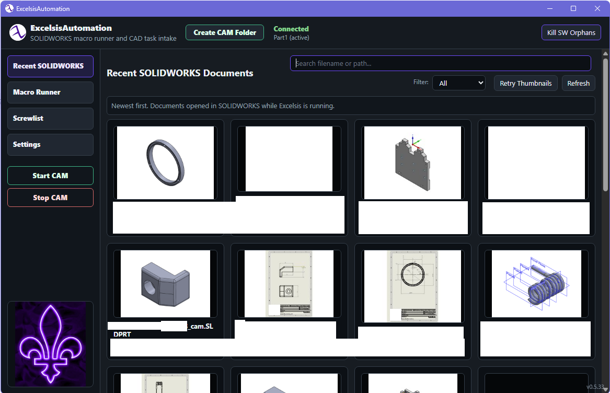
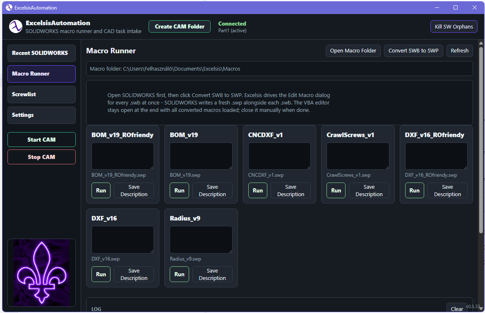

ExcelsisAutomation 0.5.69
Contains the setup EXE, bundled SWB macros, and the sibling Automation app module folder used by the installer.
Download Automation ZIP
SOLIDWORKS automation and DXF workflow
Two local CAD utilities: one for SOLIDWORKS-connected automation, macro running, document search, and CAM helpers; one focused DXF viewer/editor for checking and cleaning manufacturing geometry.
Current app
The current Automation build is 0.5.69. While SOLIDWORKS is running, it records recently opened parts, assemblies, and drawings; users can search/filter the grid, reopen documents, refresh or retry thumbnails, and see the active CAD session from one dashboard.
Macro Runner works from Documents\ExcelsisAutomation\Macros
and migrates older Documents\Excelsis\Macros content. It
runs local SWP macros, converts SWB sources to SWP, and stores
short descriptions for the visible macro cards.
Newer tools include Doc Search with type filters for SOLIDWORKS, DXF/DWG, PDF, MPF, and text files; Start CAM, Stop CAM, CAM Reload, and Create CAM Folder sidebar buttons; SolidCAM add-in discovery; UI/BOM language settings; and safe cache controls.
Contains the setup EXE, bundled SWB macros, and the sibling Automation app module folder used by the installer.
Download Automation ZIPContains the DXF viewer/editor setup EXE and the sibling DXF app module folder used by the installer.
Download DXF Viewer ZIP
Macro notes
Exports assembly BOM or profile cutlist data to Excel, including quantities, hidden counts, snapshots, and 6 m bar allocation with saw kerf.
Read-only friendly BOM/CutList variant that writes independent output files without touching the original macro source.
Exports selected planar faces to DXF and stamps a 2 mm registration circle at the DXF bounding-box center.
Batch DXF exporter for parts and assemblies with regular/precut modes, material naming, sheet metal handling, and output folders.
Read-only friendly DXF export variant with independent generated output for safer shared-project use.
Adds automatic fillets to an open part or selected assembly components, either four outer corners or all eligible sharp edges.

ExcelsisView
The current ExcelsisView build is 0.5.62. It opens DXF files on a dark grid with previous/next folder stepping, save/discard guards, file locking, selection edit, snapped measurement, offset controls, feature lists, and direct editing for LINE, ARC, CIRCLE, and LWPOLYLINE geometry.
It can dissolve recognized contours into raw entities, rebuild features, delete selections, mirror a sibling DXF, repair noisy outer contours as high-definition or arc-and-line outputs, and overlay the original outline when reviewing fixed DXFs.
Excelsis3D - plans, experiments, dev help wanted
The longer-term goal is AI-assisted parametric modeling: a user provides images, a prompt, bounding boxes, important dimensions, thread sizes, and other constraints; an LLM/Codex/API workflow helps turn that into editable CAD features.
I first tried this through SOLIDWORKS automation. It partially worked: a model was rebuilt from a few screenshots and prompts, and later results improved enough that the idea still feels possible with current models. The problem is that the SW API is hard to steer cleanly for this kind of AI workflow, so I started exploring a more open CAD engine path. I know efforts like zoo.dev exist; the interest here is an open, hackable stack.
A Dune3D-derived fork is the practical starting point: normal sketch/extrude/cut/fillet workflows first, OCCT geometry, a desktop UI, and a starting workflow functionally inspired by SolidWorks and Onshape. The aim is an open codebase designed so AI can create and edit features more directly.
I am interested in CAD-minded developers, AI coding people, and anyone curious enough to help shape the architecture. A Discord server is planned if enough people want to collaborate. Ideas are welcome; future donations would be shared.
Architecture idea
Excelsis3D is an experimental persistent-reference parametric CAD architecture. The design separates primary engineering geometry, hidden persistent references, and visible evaluated geometry, so model intent survives operations that usually make topology fragile.